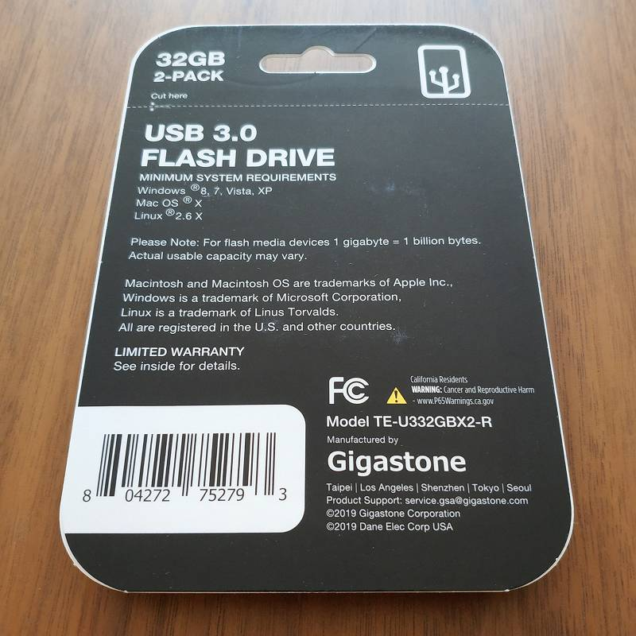

2020年7月のUSBメモリ事情
概要
現在市場に出回っているUSBメモリは書き込み速度がピンキリで 64GBの容量なのに書き込み速度 5MB/s のような使い物にならないレベルのものがあります。
そこで、書き込み速度を中心に現行品の情報を調べてみました。なお、モデルチェンジで(同型番のまま)書き込み速度が低下することもあるので、実際の情報は異なる可能性があります。
個人的な前提
USBメモリは容量が大きいものの方が高速な傾向がありますが、私はブータブルUSB、もしくは小容量のファイルコピーにしか使わないので32GBで十分と考えています。
// ブータブルUSBは32GB以上あっても意味がないことが多い(Windows純正のFAT32フォーマッタが上限32GB)
また信頼性もそこまで気にしません。実際 Sandisk や Samsung の純正品でも壊れるときは壊れますし、コネクタがもげるような物理故障もままあります。そもそも信頼性を求めるなら別のストレージを使います。
リスト
買える USB 3.0/3.1 32GB モデルを実勢価格・シーケンシャル速度[MB/s]とともに並べました。なお ※ありは実測値、なしは公称値。
Sandisk
Ultra Fit は 64GB でも $11
- $8 Ultra R160/W40
- $8 Ultra Fit R130/W60
Western Digital
Sandisk Cruzer Glide の色違い？ブランド展開の意図がよく分からない。
- $6 easystore R38/W17※
Samsung
microSD なら Sandisk よりもお買い得感があるが、USBメモリは逆。
- $9.5 Samsung BAR Plus R220/W25※
PNY
128GB 以上でないと速くないっぽい
- $8 Elite Turbo Attache 4 R133/W20
Lexar
今はLongsysのブランド。結構速いラインナップがある。
- $9 JumpDrive S75 R150/W60
Team
- $7.5 T183 R85/W20
- $8 C162 R90/W35
- $7 C201 R90/W35
Adata
S102 Proは実測で速い個体(W50+)もあるっぽい。
- $7.5 S102 Pro Advanced R100/W25
Verbatim
今はCMCのブランドになった？
- $10 Store ’n’ Go V3 R90/W25
買ってみた
さて、ここまで書いておいてナンですが Gigastone TE-U332GBX2-R (R90/W45) を買ってみました。32GB 2本で $13。 というのも、Amazonだと$25以上無料配達＆配達2週間、Staplesだと全て無料配達＆翌日配達だったので。


実測を取ってみると書き込み 30MB/s は出たのでヨシ。とはいえこの2本違うチップ積んでるんじゃねという結果。さすがおみくじ Gigastone（？
------------------------------------------------------------------------------
CrystalDiskMark 7.0.0 x64 (C) 2007-2019 hiyohiyo
Crystal Dew World: https://crystalmark.info/
------------------------------------------------------------------------------
* MB/s = 1,000,000 bytes/s [SATA/600 = 600,000,000 bytes/s]
* KB = 1000 bytes, KiB = 1024 bytes
[Read]
Sequential 1MiB (Q= 8, T= 1): 98.365 MB/s [ 93.8 IOPS]
Sequential 1MiB (Q= 1, T= 1): 98.990 MB/s [ 94.4 IOPS]
Random 4KiB (Q= 32, T=16): 5.656 MB/s [ 1380.9 IOPS]
Random 4KiB (Q= 1, T= 1): 5.450 MB/s [ 1330.6 IOPS]
[Write]
Sequential 1MiB (Q= 8, T= 1): 33.136 MB/s [ 31.6 IOPS]
Sequential 1MiB (Q= 1, T= 1): 28.941 MB/s [ 27.6 IOPS]
Random 4KiB (Q= 32, T=16): 0.710 MB/s [ 173.3 IOPS]
Random 4KiB (Q= 1, T= 1): 0.622 MB/s [ 151.9 IOPS]
Profile: Default
Test: 1 GiB (x5) [Interval: 5 sec] <defaultaffinity>
OS: Windows 10 Professional [10.0 Build 18363] (x64)
Comment: Gigastone TE-U332GBX2-R USB3.0 FLASH DRIVE 32GB (白)
なぜか黒のほうが速い
------------------------------------------------------------------------------
CrystalDiskMark 7.0.0 x64 (C) 2007-2019 hiyohiyo
Crystal Dew World: https://crystalmark.info/
------------------------------------------------------------------------------
* MB/s = 1,000,000 bytes/s [SATA/600 = 600,000,000 bytes/s]
* KB = 1000 bytes, KiB = 1024 bytes
[Read]
Sequential 1MiB (Q= 8, T= 1): 110.937 MB/s [ 105.8 IOPS]
Sequential 1MiB (Q= 1, T= 1): 111.157 MB/s [ 106.0 IOPS]
Random 4KiB (Q= 32, T=16): 7.396 MB/s [ 1805.7 IOPS]
Random 4KiB (Q= 1, T= 1): 6.213 MB/s [ 1516.8 IOPS]
[Write]
Sequential 1MiB (Q= 8, T= 1): 41.312 MB/s [ 39.4 IOPS]
Sequential 1MiB (Q= 1, T= 1): 40.268 MB/s [ 38.4 IOPS]
Random 4KiB (Q= 32, T=16): 1.274 MB/s [ 311.0 IOPS]
Random 4KiB (Q= 1, T= 1): 1.048 MB/s [ 255.9 IOPS]
Profile: Default
Test: 1 GiB (x5) [Interval: 5 sec] <defaultaffinity>
OS: Windows 10 Professional [10.0 Build 18363] (x64)
Comment: Gigastone TE-U332GBX2-R USB3.0 FLASH DRIVE 32GB (黒)
特に急がないなら Sandisk Ultra Fit を選ぶのが安牌だと思います。Sandiskは地味に4K速いし。(でも小さいのは取り外ししにくいんだよな・・・